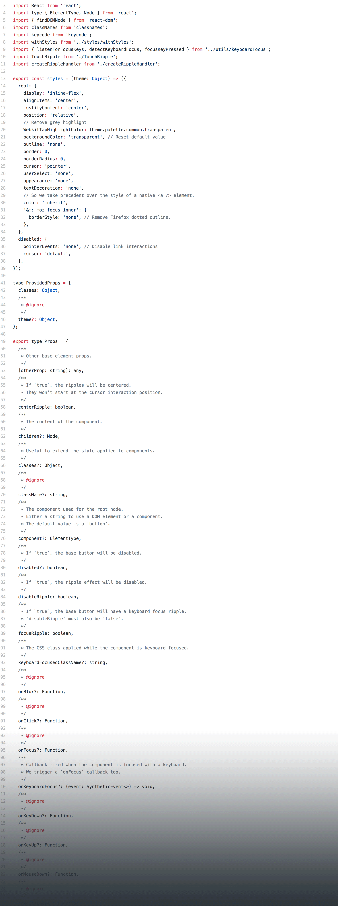

github.com/zachwolf/jsmn-nov-2017-flow
Flow is:
- Static typing for JS
- Open Source
- Built by Facebook
- Terrible... but you should use it (maybe)
const name = "Zach"
const instagramFollowers = 556
const employed = true // sorry recruiters!
// @flow
const name = 'Zach'
const instagramFollowers = 556
const employed = true
// @flow
const name: string = 'Zach'
const instagramFollowers: number = 556
const employed: boolean = true
// @flow
type PersonType = {
name: string, followers: number, employed: boolean,
pets?: number,
status: ?string,
}
const self: PersonType = {
name: 'Zach', followers: 556, employed: true,
// pets: 2,
status: null,
}
// @flow
type PersonType = {
name: string, followers: number, employed: boolean,
}
type PersonListType = Array<PersonType>
const users: PersonListType = [
{ name: 'zach', followers: 556, employed: true, },
{ name: 'nathan', followers: 320, employed: true, },
// etc...
]
// @flow
type PersonType = {
name: string, followers: number, employed: boolean,
}
type PersonListType = PersonType[]
// @flow
function sumStringValues (strings: string[]): number {
return strings
.reduce((res, val) => res += parseInt(val, 10), 0)
}
const stringList: string[] = ['10', '20', '1234']
console.log(sumStringValues(stringList)) // 1264
// @flow
function sumStringValues (strings: string[]): number {
return strings
.reduce((res, val) => res += parseInt(val, 10), 0)
}
console.log(sumStringValues('1', '2'))
^
string. This type is incompatible
with the expected param type of array type
// @flow
type PersonTupleType = [string, number, boolean]
const users: PersonTupleType = ['Zach', 556, true]
- Primitive
- Literal
- Mixed
- Any
- Maybe
- Variable
- Function
- Object
- Array
- Tuple
- Class
- Type Aliases
- Opaque Type Aliases
- Interface
- Generic
- Union
- Intersection
- Typeof
- Type Casting Expressions
- Utility
- Module
- Comment
/**
* query param looks like `?sort=name(asc)'
* We need the 'asc' part
*/
function orderFromQueryParam (search) {
const params = search.match(/\?(.*)\((.*)\)/)
return params[2]
}
const { search } = window.location
orderFromQueryParam(search)
// @flow
function orderFromQueryParam (search) {
const params = search.match(/\?(.*)\((.*)\)/)
return params[2]
^ access of computed property/element.
Computed property/element cannot be
accessed on possibly null value
}
const { search } = window.location
orderFromQueryParam(search)

1000-files-with-0-tests.zip
- It's not JavaScript
- Community suport is lacking
- Best practices are still being standardized
Where it excels:
- React Apps
- Large teams
- Long life projects